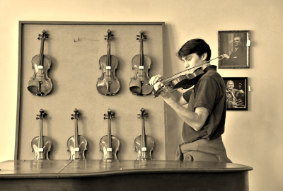

About
Born and raised in Arlington, Virginia, I was surrounded by a community of government workers and over-achieving businesspeople. I quickly developed a resistance to the typical definition of success and a passion for music and the arts. What began as kindergarten violin lessons became beat making and poetry in high school, which eventually led to a friend’s basement studio and a front of house console at a local Baptist church. It was in this new environment that I discovered I could help artists bring their vision into existence and my own way to measure success: how well I could support and contribute to creative minds. I am now a junior at Loyola University New Orleans, studying Music Industry and creating the life I want for myself, one where I can achieve my own definition of success bringing creative and inspiring music into the world.
Resume
I am an effective team member. I enjoy working with others to achieve a common artistic goal. In a group environment, I believe it is most important to find people with the right qualities and values first. Then they should put in a position where their qualities will be most valuale and they will be able to flourish.
Work Experience
- Columbia Baptist Church
- The Red Room
An internship with Columbia Baptist Church in Falls Church, Virginia gave me live sound experience during services and taught me how to work with a team to achieve a common artistic goal. I participated in recording sessions and performed the violin part for a rendition of Sam Amidon’s “Prodigal Son.”
From 2019 to 2021, most evenings, occasionally through the morning, were spent at The Red Room recording studio. I participated in my first recording sessions here and learned to work one-on-one with artists to build relationships and bring out their best work. Started by friends Varun Arkulgud and Kirit Nakka in Herndon, Va, The Red Room is a safe space for artists and producers in the DC/Marlyalnd/Virginia area to express themselves.The studio continues to grow and spread positivity throughout the area. I’ve included a few songs that I created music for and helped to produce. Visit Redroom
Contact me
Email: swgonson@my.loyno.edu